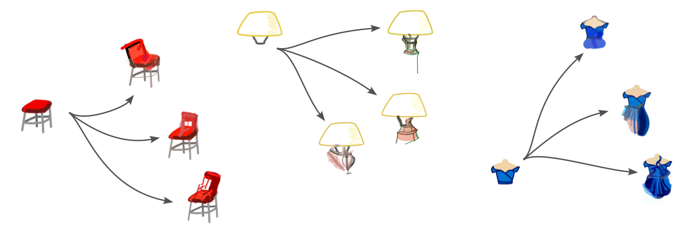

Projects
Co-Creative Drawing AI
CICADA is a collaborative, interactive and context-aware drawing agent for co-creative design. Based on Contrastive Learning (CLIP) and Differentiable Rasterization (DIFFVG), our model allows users to engage with the AI in an interactive manner, as opposed to the most common generative models, that replace the designer in the process. You can have a look at the interface, Reframer, in the video below.
Contact
Email: your.email@example.com
LinkedIn: linkedin.com/yourprofile